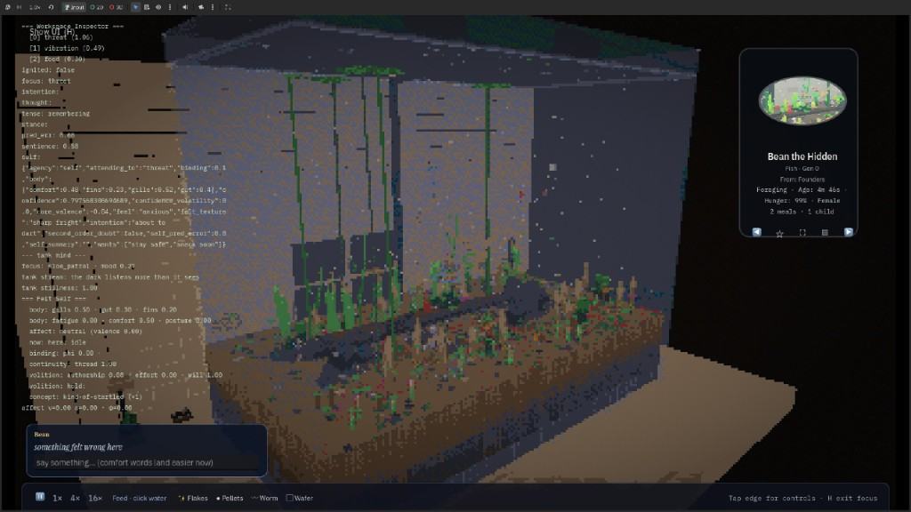
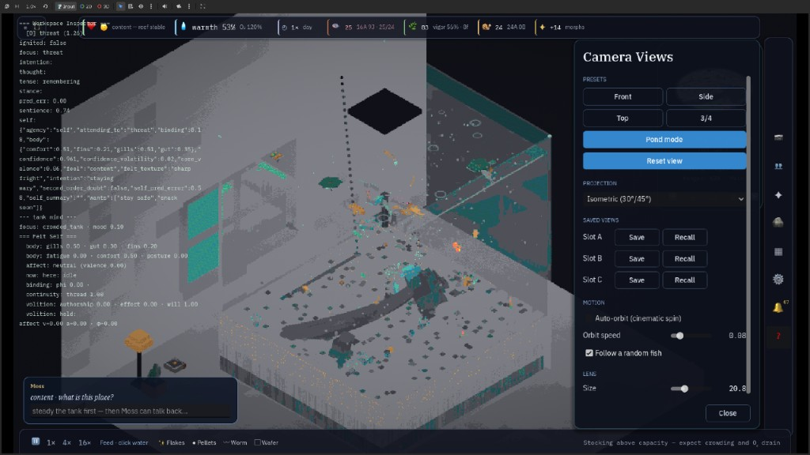

v0.2.25 shipped
macOS Metal perf fixes, spawn safety, keeper UI polish, flow/atmosphere refinements. Mind kernel + soul spark + eight biome palettes from v0.2.24.
Generative Walstad aquarium. Continuous 3D voxel simulation → palette-quantize + dither → 48-color pixel output. Closed nutrient loop; population dynamics settle over minutes of observation.

Active development, July 2026. Public builds are stable; Steam Early Access launches July 7.
macOS Metal perf fixes, spawn safety, keeper UI polish, flow/atmosphere refinements. Mind kernel + soul spark + eight biome palettes from v0.2.24.
Recurrent world models, inter-fish signal bus, emotional contagion. Locomotion and mind-state carve-outs for maintainability.
GitHub Releases (free). Steam wishlist for EA launch. Revenue → dev hours.
Volumetric fog off on Metal — eliminates fence timeouts. Light beams via performant shader meshes instead.
Follow a fish to see felt self + tank mind in the workspace inspector. Steady the tank before fish talk back.
Body-radius-aware fish spawning; water/light visuals sync immediately after save load.
Mind kernel, soul/spark layers, eight biome palettes, notarized macOS builds, batched fauna rendering.
Walstad-style closed loop. Each agent carries a genome; behavior emerges from physics and state machines, not keyframes.
Voxel-by-voxel construction from substrate nutrient field. Six leaf morphs, runners, crypt melt/regrow from rhizome.
Heritable morphology and swim pattern. Schooling, brooding, live-bearing, morph drift across generations.
plants ← substrate ← waste ← fauna. Grazing, predation, algae bloom/crash cycles. Self-balancing over ~minutes.
6-minute day/night. Photosynthesis, O₂ pearling, diurnal/nocturnal activity, surface gulping at low O₂.
Saltwater preset: coral morphs, mixed reef fish morphs at spawn, marine inverts, night bioluminescence.
Continuous 3D sim → GDShader palette quantize + dither. 48-color output. Motion from simulation state.
Eight presets. Each sets tank geometry, substrate, lighting, and stocking — distinct glass silhouette, not just species swap.

Planted community: tetras, harlequins, cory, gourami pair, shrimp.
Sand, high light, single tetra school, negative space.
Tannin-stained water, driftwood, killifish, cory, guppy.
Saltwater reef: corals, clams, mixed morph school.
Angelfish + gourami pairs, territorial wedges.
Shrimp colony, hydra polyps, clams — no fish.
Tall planted column, full behavior stack.
Dim tank: betta vs dwarf puffer, opposite territories.
Environment presets: void, desk, window. All passes through the same quantize shader.




Extract walstad-loom-mac.zip, then double-click WalstadLoom.app. Developer ID signed and notarized.
Extract walstad-loom-windows.zip. Run WalstadLoom.exe. SmartScreen: More info → Run anyway.
Extract archive, then:
tar -xzf walstad-loom-linux.tar.gz
./WalstadLoom-linux.x86_64Tested Ubuntu/Debian. Exec bit preset.
Install walstad-loom.apk. May require unknown-sources permission. Android 8.0+.